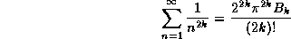

Dans le numéro de juillet-août 1989 de la revue Ciel et Espace le physicien Jean THIERRY-MIEG, dans un article intitulé "La recherche de la théorie unifiée de l'univers: fin de la physique ou physique sans fin" où il oppose la conception sur l'unification des forces en physique du prix nobel Glashow a celle de Hawking, écrit:
" Ainsi il (Hawking) se préoccupe peu de la renormalisation des infinis, difficulté technique inhérente à la théorie des champs, dont le premier inventeur fut Riemann, le grand mathématicien du siècle passé. Celui-ci découvrit que la somme des entiers (0+1+2+3+...) jusqu'à l'infini vaut -1/12. Ce curieux résultat fut redécouvert quelques années plus tard par un jeune autodidacte indou, Ramanujan."C'est assez surprenant comme remarque d'autant plus que la suite de l'article n'éclaire pas tellement plus le lecteur non mathématicien sur cette curieuse formule.
L'explication provient des travaux de Riemann concernant l'étude des fonctions
analytiques et plus particulièrement la célèbre fonction zéta qu'il
a longuement étudiée.
Rappelons brièvement ce que sont les fonctions analytiques. Il y a plusieurs définitions équivalentes des fonctions analytiques dans le plan complexe. Ces définitions ne sont pas équivalentes si on se limite à l'ensemble des réels. Donnons cette définition classique:
Une fonction complexe définie sur un ouvert D du plan complexe est dite analytique (ou holomorphe) dans D si pour tout point de D il existe un disque ouvert contenu dans D et tel que l'on aitAutrement dit une fonction est analytique si elle développable en série entière dans son domaine de définition, et la série coincide avec sa série de Taylor et la fonction analytique est ainsi somme de sa série de Taylor.
est une suite de nombres complexes et le second membre est une série entière convergente dans .
Les fonctions analytiques jouissent de propriétés remarquables dans le plan complexe.
Sur l'ensemble des réels ces propriétés sont très différentes et à vrai dire
peu intéressantes ce qui fait que leur étude s'est développée sur l'ensemble des
complexes.
Une des propriétés remarquables des fonctions analytiques dans le plan complexe est
le principe du prolongement analytique. Une fonction analytique est une fonction
bridée en ce sens qu'il n'est pas possible de la modifier au voisinage d'un point
sans répercuter la modification sur la fonction toute entière, si on fait en sorte de
la conserver analytique. De manière plus précise si deux fonctions analytiques f et g
définie sur un domaine D ouvert connexe coincident dans un voisinage ouvert arbitrairement
petit d'un point, alors elles coincident sur le domaine D tout entier.
Il peut arriver d'avoir des fonctions analytiques définies sur des domaines différents
est coincidantes sur une partie commune des domaines. On peut alors définir une fonction
plus grande définie sur l'union des domaine. On prolonge ainsi une fonction et
ce de manière unique.
Par exemple la fameuse série
est convergente dans l'intervalle ]-1,+1[ de l'ensemble des nombres réels et a pour somme:
En dehors de cet intervalle elle diverge. La fonction g est, elle,
définie sur un domaine plus large: .
La fonction f est représentée par la portion d'hyperbole de g dans
l'intervalle ]-1,+1[, en dehors de cet intervalle elle n'est pas définie
est peut être prolongée d'une infinité de manière, dont la plus naturelle
est la fonction g.
Sur le plan complexe il n'y a qu'une manière de prolonger f, c'est la fonction g.
On peut ainsi attribuer à f les valeurs de g aux points ou f n'est pas définie.
C'est ce que fait un peu cavalièrement Jean THIERRY-MIEG mais pour la fonction
zéta de Riemann.
Riemann a longuement étudié la fonction suivante appelée fonction zéta:
Si on se limite à l'ensemble des nombres réels cette série est convergente pour
z > 1 est divergente sinon.
On a réussi à sommer cette série pour les valeurs paires de z. Par exemple
et de manière plus fénérale:

où les sont les nombres de Bernoulli: , etc... Il se trouve que la fonction zéta de Riemann a dans le plan complexe plusieurs prolongements analytiques définis sur le plan auquel on a enlevé le point (1,0). En fait quand on dit plusieurs, c'est dans la formulation car les valeurs pour ces prolongements sont bien évidemment les mêmes; comme par exemple:
avec
Cette fonction vérifie la relation suivante:
pour n entier positif, c'est la fameuse fonction d'Euler.
On montre que la fonction
vérifie aussi l'équation fonctionnelle
suivante pour z prenant ses valeurs dans :
C'est cette équation fonctionnelle qui va nous servir pour évaluer .
En effet si dans le premier membre on pose z = 2 on obtient
et dans le second membre

ce qui correspond bien à la valeur annoncée.
Pour en revenir à l'article de départ, il aurait été plus rigoureux de
dire que Riemman a trouvé un prolongement analytique à la fonction
zeta qui vaut -1/12 pour la valeur -1 de la variable où ce
prolongement est défini, mais cela perd de son impact et a l'inconvénient
de prendre le lecteur pour un savant, alors les raccourcis qui en mettent
plein la vue s'imposent.